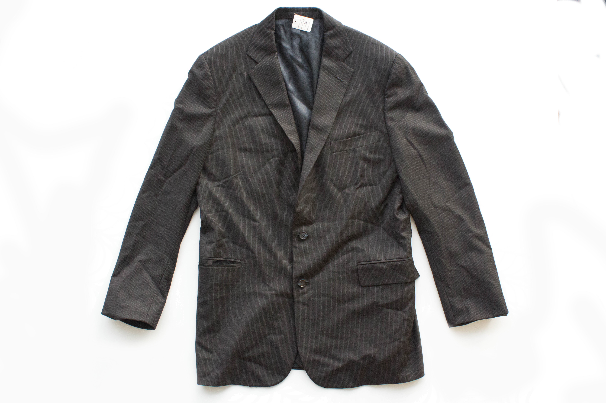

Untitled 
Harai twisted slightly in the strength augmenting exo-suit to drag the splintered beams away from the foundation of the old ruin. There hadn’t been much luck yet, and the thick heat of the afternoon was beginning to overpower the thermal stabilization system of her clothes. She glanced at James and Aragorn, picking over the newly exposed ground for anything of value. She could see that Aragorn was fatigued, and even James’s childish excitement at a scavenging expedition had begun to give in to exhaustion. The trio all wore simple clothes made from a tough, seamless, endlessly recyclable material, which regulated body heat to some degree, but not indefinitely.
Harai pulled away more of the remains of what had once been a wall of a modest suburban house. It was strange to think anyone had ever lived here, in a place that had become so hot as to be uninhabitable in the past centuries. She turned to check the transport, safe with solar array delicately unfurled like a black orchid, huge, dark and unmarred against the backdrop of the ruined land.
On the ground James pushed away a pile of rotted cloth, revealing the plastic lid of a storage bin. Aragorn turned at his gasp of excitement, and helped the boy clear away the surrounding refuse to free the box. Such finds were rare, especially this near to a living city. It hardly seemed worth it once Aragorn had peeled back the lid uncovering no usable salvage material, though the plastic container itself would be some use. Inside lay a pair of old shoes, a few colorful strips of fabric, a strange wooden foot shape, and some kind of jacket. Aragorn seemed ready to dump the contents in frustration, but James reached in and lifted out the dark silk garment and held it in the light.
It was a suit jacket, Harai knew. Strange that this forgotten trapping of a long dead world drew her so. Aragorn, apparently intrigued, laid the suitcoat gently down and examined it. Harai had once learned how people in ancient times had made their clothing, something to do with slivers of metal, very fine thread, and centralized government. The cloth seemed made of thread as well, woven by ancient machine, the making of which was long forgotten. Harai removed her glove and ran her fingers over the buttons on the cuff, feeling the smooth edges around thickly knotted thread, finding they served no practical purpose. A garment made for a man, his name stitched into the inner tag, fibers from extinct worm’s cocoons, worn for display. Its existence was incredible, hilarious and heartbreaking in one. She felt oddly compelled to return the treasure to its proper owner, to its place in a life that had ended centuries ago. For a time they were all three spellbound, gazing at what was lost.